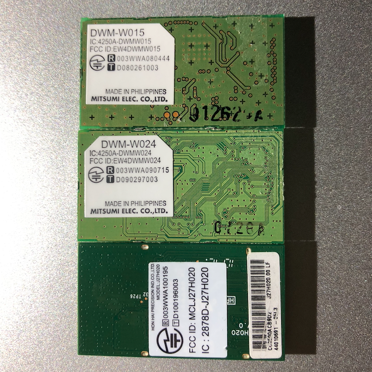

Description
The DSi immediately boots to "an error has occurred."This can happen if the installed WiFi module and firmware are incompatible.
Solution
If you have the DWM-W015 WiFi module, your issue is not caused by the WiFi module. The DWM-W015 version is compatible with all firmwares.If you have the DWM-W024 or J27H020 WiFi modules, you will need to either replace them with a DWM-W015 or upgrade your firmware to v1.4 or higher.
Alternatively, you could only update the WiFi firmware in NAND. Download the latest WiFi firmware with NUSGet and copy the app and TMD to the following directory as "000000xx.app" and "title.tmd".
NAND:/title/0003000f/484e4341/content/Note: you must enable "create decrypted contents" in NUSGet.
The WiFi module types are shown below. From top to bottom: DWM-W015, DWM-W024, J27H020
